Карл Роджерс (Carl Ransom Rogers) не мав аури «генія-блискавки», який інтелектуально знищував опонентів чи створював навколо себе культ особистості. Він радше був тим, хто тихо сів поруч і запитав: «А що, якщо людині потрібен не контроль, а простір?»
У дослідженні Гаґблума та колег (2002), яке оцінювало психологів за цитуванням, визнанням і впливом, Роджерс посів шосте місце серед найвидатніших психологів ХХ століття і друге серед клінічних психологів — поступаючись лише Фройду.
До нього психотерапія першої половини XX століття часто виглядала як ремонт годинника. Пацієнт приходить, експерт колупається в механізмі, шукає приховані дефекти, ставить діагноз і видає інструкцію.
Роджерс зробив майже блюзнірську для свого часу річ: він почав довіряти самій людині. Роджерс зауважив дивний ефект: коли людину не тиснуть оцінками, не лагодять, не соромлять і не намагаються терміново «покращити», всередині неї запускається природний імпульс до розвитку (те, що він назве тенденцією до актуалізації). Як рослина, яку перестали тримати в темній шафі і якій просто дали сонце та воду.
Люди такі ж прекрасні, як і заходи сонця, якщо дозволити їм бути. Коли я дивлюся на захід сонця, я ж не кажу: "Трохи пом'якшіть помаранчевий колір у правому куті". Я не намагаюся ним керувати. Я з трепетом спостерігаю за тим, як він розгортається.
"People are just as wonderful as sunsets if you let them be. When I look at a sunset, I don't find myself saying, 'Soften the orange a bit on the right hand corner.' I don't try to control a sunset. I watch with awe as it unfolds," з книги "A Way of Being"
Багато соціальних інституцій XX століття (від шкіл до індустріальних виробництв) спиралися на ідею контролю. Психологія того часу теж була багато в чому директивною: психоаналітики шукали приховані імпульси, біхевіористи вимірювали поведінку, психіатри ставили діагнози.
А Роджерс приніс ідею безумовного позитивного ставлення (unconditional positive regard). Важливо зрозуміти, що це не означає «сліпо хвалити людину за все» чи виправдовувати її деструктивні вчинки. Це складніша концепція: терапевт приймає переживання, страхи та почуття клієнта як невіддільну частину його буття, не виставляючи умов для поваги.
Уявіть собі будинок, у якому ніколи не лунає гучний сміх, ніхто не танцює, не грає в карти і не ходить до театру. Газована вода вважається гріховною розкішшю, а прояв будь-яких яскравих емоцій чи лінощів — слабкістю. Саме в такій родині консервативних протестантів 8 січня 1902 року в передмісті Чикаго (Оук-Парк) народився Карл Роджерс. Він був 4-ою дитиною. Його батьки (Волтер і Джулія) щиро любили своїх шістьох дітей, але їхня турбота виражалася через суворий контроль, жорстку етику праці та релігійні догми. У цьому будинку почуття були підпорядковані обов'язку.
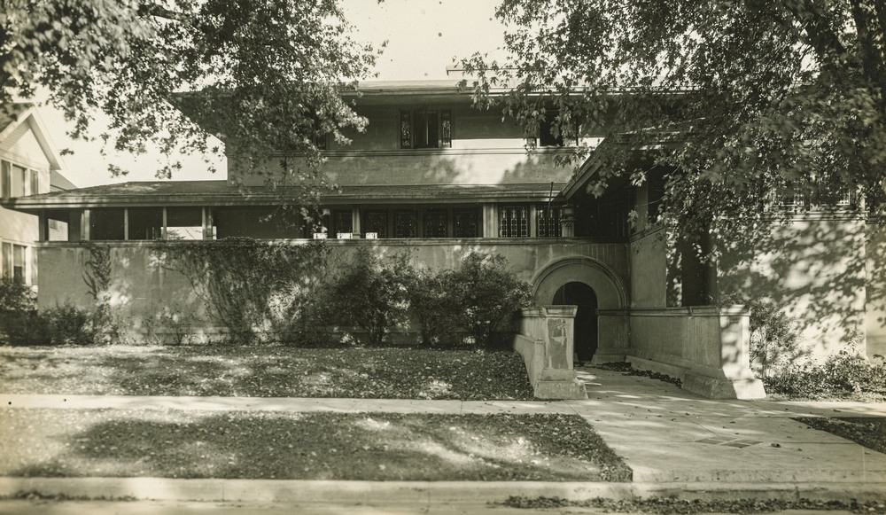
Маленький Карл ріс хворобливим, сором'язливим і глибоко самотнім емоційно. Щоб сховатися від задушливої атмосфери постійної оцінки, він тікав у світ книг. Він був надзвичайно начитаним: навчившись читати ще до школи, підлітком, коли звичайні книги закінчувалися, він годинами міг читати енциклопедії та навіть словники.
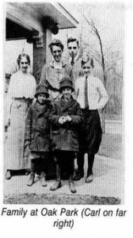
Коли Карлу виповнилося 12 років, батько (успішний інженер-будівельник) вирішив уберегти дітей від «спокус міста» і перевіз сім'ю на ізольовану ферму на захід від Чикаго. Саме там підліток знайшов свою першу пристрасть — наукове землеробство. Він вивчав біологію, вирощував нічних метеликів, читав товсті аграрні довідники.
Спостерігаючи за природою, він зрозумів надзвичайно важливу річ, яка пізніше ляже в основу його психології: природа не засуджує. Земля не моралізує. Якщо рослині дати правильні умови — ґрунт, воду, сонце — вона неминуче тягнеться до росту. У природі не було «гріха», були лише об'єктивні умови. Потім сталася Перша світова війна. Карл пересидів її підлітком у глибокому американському тилу.
У 1922 році 20-річного Роджерса, який тоді вивчав історію та теологію в Університеті Вісконсина, відправили на Всесвітню студентську християнську конференцію до Пекіна (Китай). Дорога на кораблі та життя в Азії тривали півроку. Віз 11-кг друкарську машинку через океани та континенти, ведучи докладний щоденник. Там він зустрів молодь з усієї Європи. Архів листів з тієї поїздки зберігається в University of California, Santa Barbara.
Хоча у своєму щоденнику він ніколи прямо не пояснював причин, він писав з огидою про аморальне духовенство на Філіппінах і про жахливу дитячу працю на китайських фабриках, заявляючи: "Я більше не дивуюся, що люди стають більшовиками (I no longer wonder that people turn Bolshevik)". Для батьків це було справжнім ударом. Від емоційної напруги та внутрішнього конфлікту у Карла відкрилася виразка шлунка та йому довелося лікуватися кілька місяців.
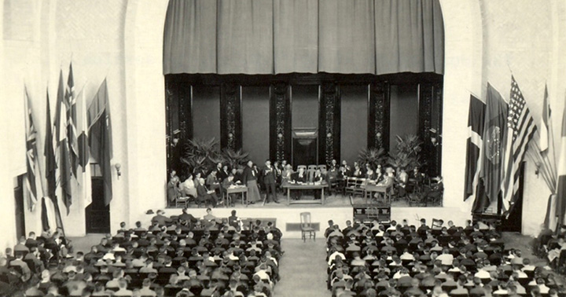
Минуло чотири роки після кровопролитної війни, але Роджерс із жахом побачив, як глибоко французи та німці все ще несли в собі національну ворожнечу та інституційну ненависть. Проте, спостерігаючи за ними в неформальних, людяних дискусійних групах, він помітив, що при особистому спілкуванні «вороги» виявлялися звичайними, чудовими людьми, які відчувають однаковий біль. Цей контраст між нав'язаною ідеологією (що змушує людей ненавидіти) та живим людським досвідом глибоко вразив його.
Поїздка до Китаю дозволила йому вирватися з-під батьківського контролю — пізніше він згадував, що вперше в житті міг думати власні думки й самостійно вирішувати. Він побачив, що люди інших вір і культур — неймовірно добрі та моральні, навіть без суворих правил та догм. Перебуваючи в Азії, він пише додому «лист незалежності», в якому м'яко, але твердо заявляє, що більше не поділяє консервативних релігійних поглядів сім'ї і спиратиметься на власний досвід та розум.
У 1924 році в 22 роки Роджерс всупереч бажанню батьків, які вважали шлюб передчасним, одружується зі своєю дитячою любов'ю Хелен Елліотт. З нею він проживе разом все життя — 55 років, аж до її смерті.
Того ж року Карл вирішив продовжити навчання та вступає до Об'єднаної теологічної семінарії (Union Theological Seminary) у Нью-Йорку, відомої своїми ліберальними поглядами. Група семінаристів там мала право самостійно формувати теми для обговорення. Але незабаром розуміє: щиро хоче допомагати людям вирішувати їхні проблеми. Він залишає теологію, буквально переходить через вулицю до Педагогічного коледжу Колумбійського університету (Columbia University in the City of New York) і з головою занурюється в клінічну та освітню психологію.
У 1928 році 26-річний Роджерс переїжджає до Рочестера (штат Нью-Йорк), де отримує роботу в Товаристві із запобігання жорстокого поводження з дітьми (SPCC). Протягом наступних 12 років він працює практичним психологом із безпритульними, малолітніми злочинцями та кризовими сім'ями.
Він був озброєний двома головними підходами того часу: психоаналізом (інтерпретація прихованих імпульсів та минулого) та біхевіоризмом/директивним консультуванням (виміряти поведінку, зібрати анамнез, поставити діагноз і дати чітку пораду). Але, щодня стикаючись із реальним болем реальних людей, Карл починає розчаровуватися в них. Він бачить, що інтелектуальне розуміння проблеми, нав'язане пацієнту ззовні експертом, майже ніколи не призводить до реальних змін у поведінці.
Момент фундаментального осяяння стався під час роботи з матір'ю важкого підлітка-піромана. Роджерс провів ретельний аналіз і серію зустрічей, під час яких розумно, крок за кроком доводив жінці, що її дитина так поводиться, бо вона (мати) підсвідомо відкидає сина. Жінка захищалася і пручалася інтерпретаціям. Директивна терапія зайшла в глухий кут, і вони вирішили припинити зустрічі. Попрощавшись, жінка підійшла до дверей кабінету, на мить зупинилася і...
... запитала: «А ви приймаєте дорослих на консультування?» Роджерс відповів ствердно. Вона повернулася в крісло і почала щиро, зі сльозами виливати свій власний біль, своє відчуття провалу, свій відчай у шлюбі. Цього разу Карл не аналізував. Він просто сидів і уважно слухав. Не перебивав, не інтерпретував, не давав порад. І сталося несподіване: виговорившись у безпечному, емпатичному просторі, позбувшись необхідності захищатися від експерта-психолога, жінка сама почала знаходити рішення. Її ставлення до себе змінилося, а згодом змінилася і поведінка її сина.
Клієнт краще за всіх знає, що саме в нього болить, у якому напрямку потрібно шукати, які проблеми є критичними, а який досвід був глибоко прихованим... Я зрозумів, що мені потрібно перестати грати роль всезнаючого експерта і дозволити клієнту самому вести мене
Цей досвід назавжди змінив його підхід до роботи. Роджерс зрозумів руйнівну силу позиції «я експерт розумію тебе краще, ніж ти сам». Це дуже солодка роль для багатьох інтелектуалів, але Карл підозрював, що людина, яку постійно інтерпретують чужими словами, поступово втрачає контакт із власним відчуттям реальності.
У Рочестері він не лише слухав, а й працював як науковець. У 1931 році створює «Тест особистісної адаптації Роджерса» для дітей. Відмінність цього тесту була в тому, що він намагався виміряти не зовнішні патології, а те, як дитина сама бачить себе і свої стосунки зі світом (дослідження «Я-концепції»).
У червні 1936 року в Рочестері Роджерс відвідав триденний семінар Отто Ранка — колишнього учня Фройда, що порвав з ним і розробив власну «терапію волі». Сам Роджерс пізніше сказав біографу: «Я заразився ідеями Ранка» і почав розуміти можливості недирективного підходу. За словами дослідників, Роджерс прийняв клієнтоцентровану філософію Ранка і дав їй конкретну техніку, повністю прибравши директивні елементи.
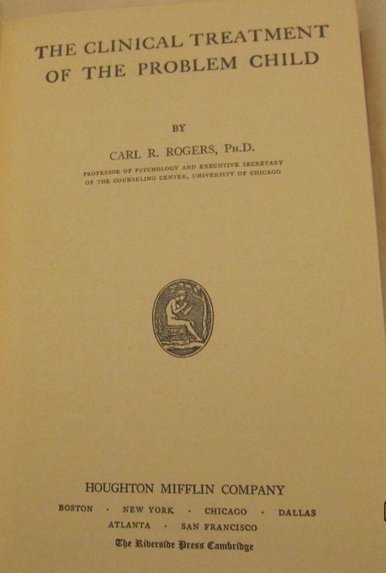
У 1939 році він публікує свою першу велику книгу "The Clinical Treatment of the Problem Child", яка привернула неабияку увагу академічної спільноти. Університет штату Огайо прочитав її і запропонував 38-річному практику з соціальної служби одразу посаду професора — випадок, майже безпрецедентний для академічного світу того часу.
Переїзд до Огайо у 1940 році став початком його великої академічної кар'єри. Роджерс отримав кафедру і студентів. У грудні 1940 року в Міннесоті він читає лекцію, яку можна вважати офіційним народженням його напряму. Колеги-психіатри були шоковані. Роджерса звинувачували в тому, що він «віддає кермо пасажиру» і пропагує невтручання, бо каже:
Психолог не повинен бути директивним експертом, який «лагодить» пацієнта. Завдання терапевта — не вирішувати проблему, а створити специфічні умови, за яких клієнт сам розкриє свій потенціал
Щоб дослідити цей процес об'єктивно і довести, що недирективність не означає пасивність, Роджерс робить на той час революційний технологічний крок у психології. Приносить у кабінет фонограф, тобто записуючий пристрій на платівках, а пізніше — магнітофон і починає робити повні аудіозаписи терапевтичних сесій.
До нього записувалися лише суб'єктивні нотатки лікаря після сеансу, а те, що відбувалося за зачиненими дверима психоаналітика, було «чорним ящиком». Роджерс першим зробив терапію прозорою для наукового аналізу. Він слухав власні слова, вивчаючи, як саме реагує клієнт на різні типи реплік та почув на записах, що директивна порада часто викликає опір, тоді як точне емпатичне відображення почуттів викликає інсайт і просування вперед.
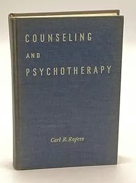
У книзі "Counseling and Psychotherapy" (1942) не просто виклав теорію, а вперше в історії психології опублікував повну, дослівну стенограму реальної серії терапевтичних сесій (відому як випадок «Герберта Браяна»). Тут він вводить і закріплює термін «недирективний підхід» (non-directive therapy), підкреслюючи, що психолог має бути фасилітатором, каталізатором процесу, а не керівником життя клієнта.
У цей же час в історію втручається Друга світова війна, яка сформувала величезний практичний запит до психології. З фронтів поверталися десятки тисяч американських солдатів із психологічними травмами, ПТСР (тоді це називали «військовим неврозом»), складнощами з адаптацією до мирного життя. Роджерса як консультанта запрошують до USO (United Service Organizations, Об'єднані організації обслуговування) — це американська неурядова некомерційна організація, заснована 1941 року для підтримки морального духу військовослужбовців США та їхніх сімей.
І тут недирективний підхід Роджерса показав свою масштабованість: були розроблені інтенсивні програми навчання для не-психологів — медсестер, капеланів, соціальних працівників, волонтерів Червоного Хреста. Вчив їх не ставити діагнози і не заглиблюватися в складну аналітику дитячих травм, а використовувати базове активне слухання, емпатію та здатність створювати безпечний простір для ветеранів, де ті могли б без сорому та осуду розповісти про пережиті жахи війни.
Цей досвід показав, що емпатичне слухання — це навичка, якій можна навчити, і вона має терапевтичний ефект.
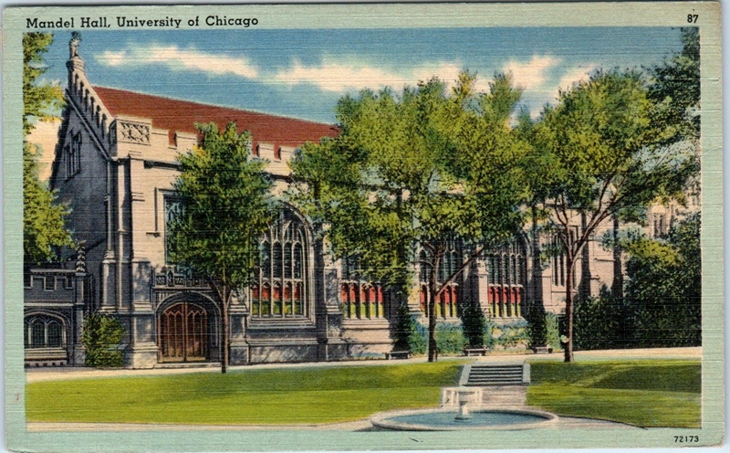
У віці 43 років Карла Роджерса запрошують до престижного Чиказького університету. Цей період стає піком його кар'єри. Успіх недирективного підходу приніс Роджерсу загальнонаціональне визнання: у 1947 році його, вихідця з соціальної роботи, обирають президентом Американської психологічної асоціації (АПА, American Psychological Association).
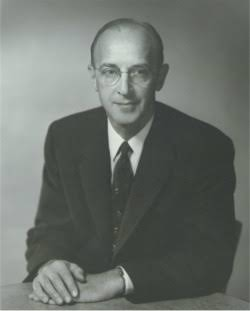
Незважаючи на м'якість підходу, Роджерс залишався точним вченим. Він хотів довести ефективність своєї терапії не абстрактними конструкціями, а емпіричними даними, тому засновує Консультаційний центр (Counseling Center) — величезну клінічну та дослідницьку лабораторію. Роджерс збирає навколо себе блискучих студентів і співробітників.
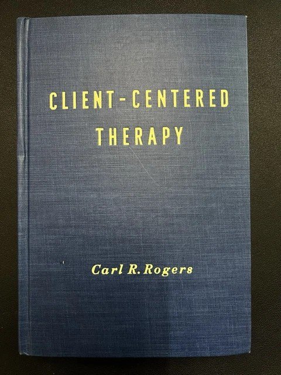
У 1951 році виходить його друга фундаментальна книга «Client-Centered Therapy», де свідомо відмовляється від терміну «недирективна». Роджерс зрозумів, що недирективність часто сприймалася його учнями як пасивність (просто сидіти, кивати і говорити «угу»). Його ж метод вимагав 100% активної внутрішньої роботи терапевта — постійної концентрації на емоційному світі іншої людини. Роджерс також офіційно закріплює термін «клієнт» замість медичного «пацієнт», щоб підкреслити: людина прийшла не лікуватися від хвороби, вона є рівноправним партнером, який замовляє послугу супроводу.
Роджерс бачив, що через брак прийняття, коли любов у дитинстві дається лише за «правильну» поведінку, люди починають жити фальшивими версіями себе. Вони оптимізуються під чужі очікування, ніби NPC у грі. Виникає розбіжність між «тим, ким я є» та «тим, ким мені доводиться бути заради прийняття» — Роджерс називав це інконгруентністю. Саме тому терапія за Роджерсом — це не «лагодження дефектів», а процес відновлення втраченого контакту з власним досвідом.
Як людина розуміє, що саме їй потрібно, якщо відкинути зовнішні авторитети? Роджерс ввів концепцію організмічного процесу оцінювання (organismic valuing process). Він помітив, що існує фундаментальна різниця між тим, що наша думка (нав'язана суспільством) вважає правильним, і тим, що відчуває наше тіло та глибинне «Я».
Малюк інтуїтивно знає, коли він голодний, а коли ситий; він плаче від болю і сміється від радості — він довіряє своїм відчуттям. Але дорослий часто з'їдає торт від стресу (хоча тілу це не потрібно), одягається не так, як хочеться, а так, як «прийнято», і залишається в токсичних стосунках, бо «так треба». Це і є розрив між справжнім досвідом і соціальним сценарієм.
Мета роджеріанської терапії — допомогти людині знову навчитися довіряти цьому внутрішньому компасу. Коли людина стає конгруентною, вона перетворюється на те, що Роджерс називав «Повністю функціонуючою людиною» (Fully functioning person). Це не ідеал без помилок, це радше стан постійного becoming — становлення. Така людина відкрита новому досвіду, довіряє собі, живе творчо і здатна адаптуватися до змін без втрати себе.
Використовуючи метод Q-сортування (розроблений Вільямом Стівенсоном у 1930-х роках - шукає кореляції між самими людьми) та аналіз тисяч годин аудіозаписів, команда Роджерса показала статистично значущу кореляцію: у процесі успішної клієнт-центрованої терапії розрив між «Реальним Я» клієнта (як він оцінює себе зараз) та «Ідеальним Я» (яким би він хотів бути) суттєво скорочується. Людина стає більш конгруентною і починає приймати себе.
Маючи статус зірки та безліч учнів, Роджерс категорично відмовлявся створювати формалізовану школу з видачею дипломів і сертифікатів «роджеріанського терапевта». Він боявся, що жорстка структура вб'є живу суть методу і перетворить його на догму, як це часто траплялося у фрейдистів. Тому казав учням: «Ваше завдання — не копіювати мене. Ваше завдання — бути конгруентними з самими собою».
Завдяки цій свободі його студенти виросли у видатних незалежних авторів зі своїми підходами: Юджин Джендлін (Focusing), Томас Гордон (Parent Effectiveness Training, Teacher Effectiveness Training), Маршалл Розенберг (Non-violent Communication).
У цей же час в Америці формується так звана «Третя сила» в психології — Гуманістична психологія, ключовими фігурами якої стали Карл Роджерс та Абрахам Маслоу. Вони ідеально доповнювали один одного:
Але як у ці плідні роки Роджерс почувався вдома?
Тут ми стикаємося з класичним парадоксом. Можливо, витримувати чужий біль у кабінеті виявилося простіше. Зі своєю дружиною Хелен він жив у любові, але для своїх підростаючих підлітків — Девіда (нар. 1926) і Наталі (нар. 1928) — він був не тим батьком, якого б вони хотіли. Пам'ятаючи своє суворе дитинство, Роджерс панічно боявся відкритих сварок чи інтенсивних конфліктів та встановив вдома повну демократію, уникаючи контролю. Наталі пізніше згадувала, що батько з ранку до вечора був відданий роботі і емоційно відсторонювався від домашніх конфліктів, ховаючись за книгами або в саду. Це зі слів дітей, сам Роджерс про таке не розповідав.
Під час чиказького періоду Роджерс потрапив у патологічні стосунки з клієнткою на ім'я Джен (Jan), яка, за його власними словами, «через свої потреби намагалася зруйнувати його». Він продовжував сесії, бо вважав її на межі психозу і думав, що не має іншого вибору. Урешті-решт він сам опинився на межі зриву та звернувся по допомогу до свого колеги — Натаніела Раскіна, власного учня і співробітника Чиказького консультаційного центру. Роджерс шукав терапевтичної допомоги у учня, а не у «стороннього» психолога.
У 1957 році 55-річний Карл Роджерс, перебуваючи на піку слави, робить несподіваний і надзвичайно ризикований крок. Він залишає комфортний Чикаго і переходить до своєї альма-матер — Університету Вісконсина.
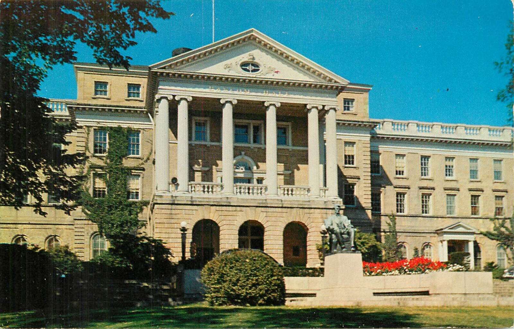
У 1957 році 55-річний Роджерс публікує свою найцитованішу статтю «Необхідні і достатні умови терапевтичної зміни особистості». Він виділив 6 умов включно з тим, що дві особи мають бути в психологічному контакті, а клієнт перебуває в стані тривоги/інконгруентності. Три з цих умов — ті, що стосувалися базових установок терапевта (відомі як «Тріада Роджерса») — стали основою його школи:
У нього була амбітна мета: він хотів науково перевірити, чи спрацюють його шість умов терапевтичної зміни не лише на людях з неврозами чи студентах, а на пацієнтах із тяжкими психіатричними патологіями.
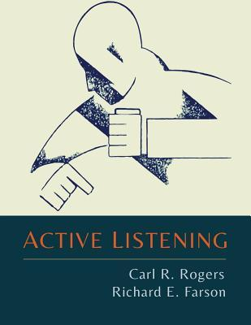
Книга «Активне слухання» (Active Listening, 1957) пропонує техніку комунікації, розроблену Роджерсом і Фарсоном, яка вимагає від слухача активно перефразовувати почуте, щоб підтвердити розуміння як змісту, так і емоцій співрозмовника. Написана для широкої аудиторії.
Розгортає масштабний і складний дослідницький проєкт (Wisconsin Project) у державній психіатричній лікарні Мендота, намагаючись застосувати клієнт-центрований підхід до пацієнтів із тяжкою формою шизофренії. Результати цього проєкту були неоднозначними і змусили Роджерса скоригувати свої погляди.
Дослідження вимагало величезних коштів на записуючу апаратуру, розшифровку сотень годин плівок та оплату праці дослідників. Грант на це Роджерсу (і багатьом іншим психологам) видала організація під назвою «Фонд дослідження екології людини» (Society for the Investigation of Human Ecology), де він з 1957 року увійшов до ради директорів.
Наприкінці 1970-х років, після урядових розслідувань у США, з'ясувалося, що багато психологічних досліджень були секретною програмою розвідки ЦРУ (CIA), яка діяла в рамках MK-Ultra (вікіпедія). У розпал Холодної війни спецслужби фінансували безліч досліджень, намагаючись знайти методи впливу на свідомість, контролю над розумом та покращення технік допиту.
Але прямих доказів, що саме цей фонд був ширмою ЦРУ, немає, бо багато документів були знищені. Деякі історики зазначають, що Роджерс знав про зв'язок фонду з урядовою розвідкою, але погоджувався на співпрацю, оскільки вірив, що його дослідження мають суто гуманістичний характер і не можуть бути використані для шпигунства чи допитів.
Багато піддослідних поводилися як маленькі діти, роками мовчали або страждали на сильні галюцинації. Роджерс зробив важливе клінічне спостереження: пацієнти з важкими розладами були неймовірно чутливі до фальші. Якщо терапевт приховував своє роздратування, втому або безсилля за маскою «доброго і всерозуміючого лікаря», пацієнти з шизофренією миттєво це зчитували і реагували закритістю або агресією.
Роджерс усвідомив, що з трьох його головних умов конгруентність (щирість) є найважливішою базою. Емпатія без щирості сприймається як загроза. Згодом стало очевидно, що тільки емпатія та активне слухання не здатні «вилікувати» шизофренію.
Період у Вісконсині став чи не найпохмурішим у житті Роджерса. Окрім складнощів із пацієнтами, на факультеті психології розгорілася жорстока академічна війна. Вісконсин був оплотом експериментального біхевіоризму, і багато колег відкрито зневажали гуманістичні ідеї Роджерса, вважаючи їх ненауковими, та налаштовували аспірантів проти нього. Влітку 1962 року його соратники Юджин Джендлін та Дональд Кіслер виявили, що один із ключових дослідників проєкту, Чарльз Труакс (Charles Truax), привласнив значну частину спільних наукових даних та матеріалів, намагаючись опублікувати роботу під одноосібним авторством. Розгорівся важкий скандал із залученням юристів.
У цій ситуації прагнення самого Роджерса уникати конфронтації та віра в доброчесність інших зіграли проти нього: він категорично відмовлявся жорстко розібратися з Труаксом, усунути його від роботи чи взяти на себе адміністративний контроль. Як згадував згодом Джендлін, намагаючись не проявляти власного гніву і віддаючи контроль, Карл фактично змусив своїх колег виснажувати одне одного внутрішньою боротьбою.
У віці 57 років (близько 1959 року) від хронічного стресу, відсутності підтримки та розмиття власних кордонів у Роджерса стався важкий нервовий зрив. Він згадував, що був на межі повного відчаю. Він був змушений буквально втекти — взяв відпустку, поїхав з дружиною в ізольовану хатину. Цей гіркий досвід навчив його, що емпатія та прийняття інших неможливі без уміння захищати власне «Я».
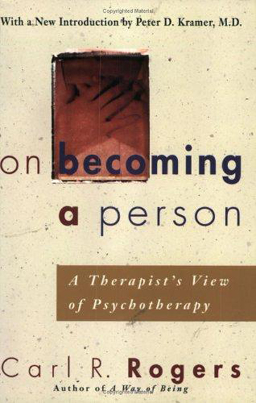
Вийшовши з життєвої та професійної кризи, майже 60-річний Роджерс у 1961 році публікує книгу "On Becoming a Person", яка стала вінцем його кар'єри і світовим бестселером. Написана не сухою академічною, а дуже теплою, особистою мовою, вона вийшла далеко за межі кабінету психотерапевта.
Роджерс показав, що принципи емпатії, щирості та прийняття універсальні: вони необхідні у стосунках між подружжям, між учителем та учнем, між керівником та підлеглим. Ця книга зробила його духовним авторитетом для цілого покоління.
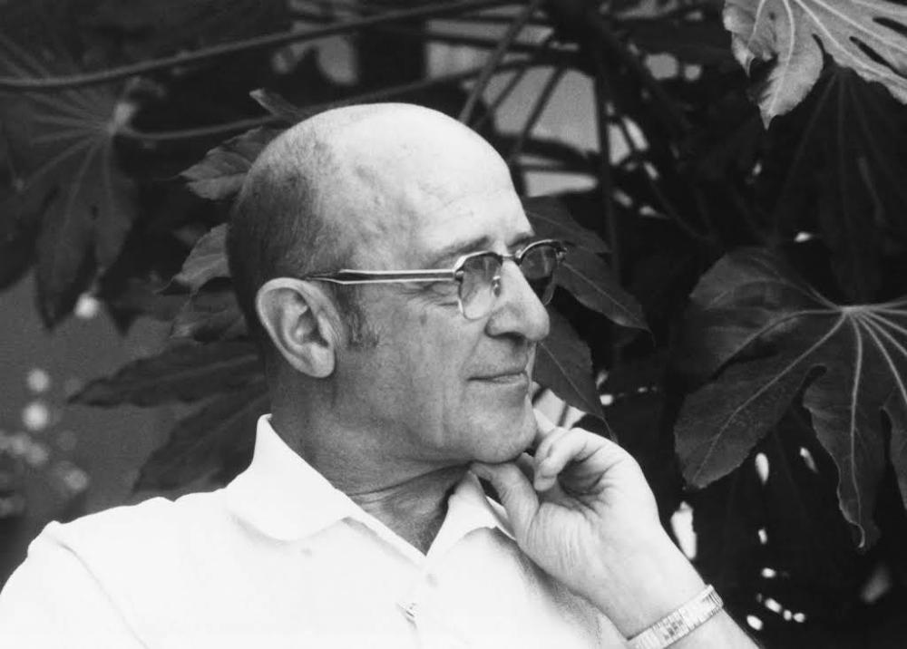
У 1964 році (за іншими джерелами у 1963) Роджерс вирішує, що з традиційною роботою, ієрархічною університетською системою покінчено - звільняється, пакує речі і разом з Хелен переїжджає до сонячної Ла-Хойї (La Jolla, Каліфорнія).
Переїзд збігся з розквітом Роджерса як особистості. Скинувши з себе залишки пуританського минулого, він почав створювати абстрактні кінетичні скульптури (мобілі) з дроту та скла, годинами вирощував екзотичні квіти у своєму саду і з задоволенням змішував для друзів міцний мартіні. «Хороше життя — це процес, а не фіксований стан», — писав він, і сам був найкращою ілюстрацією цієї думки.
У цей же час в інтелектуальному полі США активно обговорювалося питання людської природи. Роджерс брав участь у багатьох дискусіях, найвідомішою з яких була серія полемік із Берресом Скіннером у середині 1950-х та 60-х роках. Це було зіткнення двох титанічних парадигм. Скіннер відстоював екологічний (радикальний) детермінізм: він вважав, що поняття свободи волі є ілюзією, а поведінка людини повністю формується зовнішніми стимулами (підкріпленнями та покараннями). Скіннер пропонував використовувати наукову «поведінкову інженерію» для створення кращого суспільства. Роджерс же палко захищав ідею суб'єктивного сенсу, автономії, внутрішнього вибору та здатності людини до самовизначення. Він стверджував, що наука не повинна перетворювати людину на об'єкт, навіть «заради її блага».
📌 Найвідоміший їхній очний дводенний діалог відбувся 1962 року в Міннесотському університеті в Дулуті. Багатогодинний запис Skinner and Rogers Dialogue Debate, який у 1976 році був виданий на касетах, можна офіційно послухати на YouTube.
Карл стає одним із засновників незалежного Центру вивчення людини (Center for Studies of the Person, CSP), як простір, у якому навчання, дослідження й особистісний розвиток народжувалися не через контроль чи авторитет, а через відкритий діалог, довіру та живу присутність людей одне з одним. Роджерс прагнув створити середовище, де кожен міг залишатися автентичним, вільно досліджувати власний досвід і водночас впливати на спільний процес.
CSP став не просто психологічним центром, а експериментом із побудови більш людяних форм співпраці — без примусу, з повагою до автономії, емпатії та здатності людини до саморозвитку. Хоча центр залишався відносно невеликим і локальним саме у Ла-Хойї, його ідеї поширилися далеко за межі самого простору. Він став важливим осередком розвитку гуманістичної психології, фасилітації, емпатичного спілкування та горизонтальних форм навчання й співпраці.
У цей період Роджерс починає бути одним із головних популяризаторів «Груп зустрічей» (Encounter groups), де збиралися від 10 до кількох сотень людей на інтенсивні групові сесії. Він виступав фасилітатором - не давав групі теми і не керував дискусією.
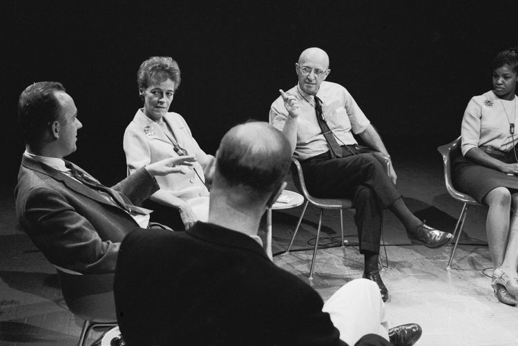
Спочатку виникала незручність, люди починали сперечатися або вимагати вказівок. Але Роджерс просто сидів у колі і спокійно, емпатично відображав емоції присутніх. Поступово соціальні маски спадали, люди починали говорити про глибокі страхи, плакати, виражати гнів і відчувати справжню близькість одне з одним.
Роджерс показав, що здоровим людям катастрофічно не вистачає безпечного простору для автентичності.
У 1965 році для навчальних цілей зняли унікальний експеримент: та сама клієнтка — Глорія — по черзі працювала з трьома різними відомими терапевтами — Фріцом Перлзом (гештальт), Альбертом Еллісом (раціонально-емотивна терапія) та Карлом Роджерсом. Кожен із них демонстрував кардинально інший підхід.
Але саме емпатичний, теплий і недирективний сеанс Роджерса (запис на YouTube) виявився для Глорії найціннішим. Між нею і Роджерсом зав'язалося живе листування, яке тривало 15 років.
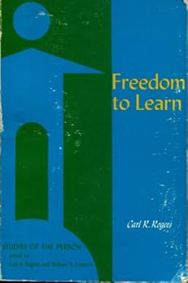
Паралельно з груповою роботою, Роджерс переніс свою філософію в ще одну консервативну сферу — освіту. У 1969 році він видає книгу «Свобода вчитися» (Freedom to Learn), яка стала маніфестом проти традиційної шкільної системи. Він бачив, що школи функціонують за фабричною моделлю: вчитель — це менеджер, який завантажує «сировину» (учнів) знаннями, оцінює і відкидає брак.
Роджерс запропонував студентоцентроване навчання, де викладач виступає не диктатором, а фасилітатором. Його експерименти показували: коли студентам дають свободу обрати теми, формат і темп навчання, а викладач замість оцінювання проявляє до них безумовну повагу, — їхня внутрішня мотивація росте. Ці ідеї на десятиліття випередили сучасні тренди в освіті.
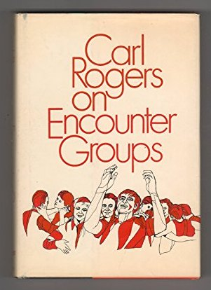
У 1970 році виходить книга «Групи зустрічей» (On Encounter Groups), яка стала теоретичним узагальненням його досвіду роботи з великими та малими групами. Вона легітимізувала групову фасилітацію як самостійний напрям у психології.
Проте бурхливий розквіт руху «Груп зустрічей» мав і свою темну сторону. З'явився термін «жертви груп зустрічей» (encounter group casualties) — люди, які отримали нервові зриви. Метод Роджерса вимагав від фасилітатора надзвичайної майстерності та конгруентності, але тисячі ентузіастів почали копіювати лише зовнішню форму: змушували людей кричати, плакати, «вивалювати все назовні», не маючи змоги тримати безпечний емпатічний простір. Роджерс з болем спостерігав, як його ідея глибокого людського контакту іноді вироджувалася в формальність.
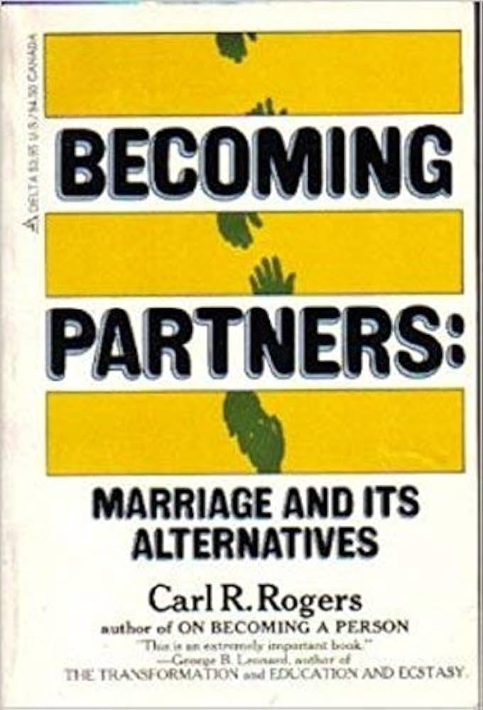
Книга «Становлення партнерів: шлюб та його альтернативи» (Becoming Partners: Marriage and Its Alternatives, 1972) відображає дух «сексуальної революції» та перебудови суспільних норм 1970-х років. Роджерс досліджує кризу традиційного інституту шлюбу та описує нові форми партнерства й комунікації між людьми, які намагаються зберегти автономію всередині стосунків.
Сімейне життя Роджерса в цей період також проходить через трансформації. Його діти виросли і досягли успіху:
В останні десять років життя фокус Роджерса змістився з індивідуальної психотерапії на вирішення міжнародних та соціальних конфліктів. Він застосовував фасилітацію в найгарячіших точках планети. У 75 років він збирав за одним столом католиків і протестантів у Белфасті (Північна Ірландія). У 78 років проводив групи зустрічей у Південній Африці між білими та чорношкірими лідерами під час апартеїду, допомагаючи їм побачити людяність одне за одним.
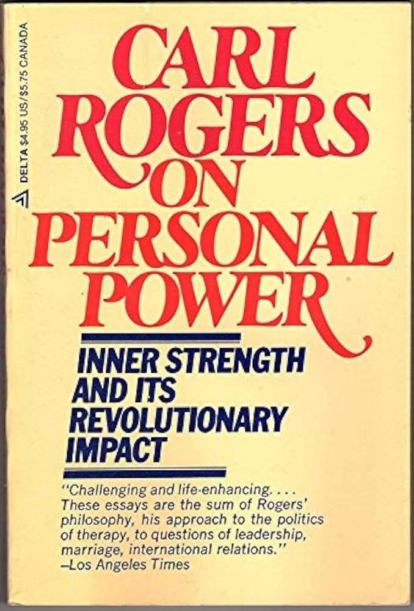
Книга «Особиста влада: Внутрішня сила та її революційний вплив» (On Personal Power: Inner Strength and Its Revolutionary Impact, 1977) часто випадає з фокусу психотерапевтів. Тут він виходить у політичну та соціологічну площину: аналізує, як людиноцентрований підхід може змінити розподіл сили в суспільстві, критикує авторитаризм у державних інституціях.
У 1979 році після тривалої хвороби померла Хелен. Роджерс, якому було вже 77 років, віддано доглядав за нею в останні місяці. В цей же рік померла й Глорія. За місяць до смерті вона написала Роджерсу 11-сторінкового листа, в якому розповіла, що вмирає, і додала: «Але дивовижна частина цього, Карле, — як усе це відчувається як особливий подарунок».
Втрата коханої дружини та подруги підштовхнула його, колишнього строгого вченого-емпірика, до вивчення езотерики, медіумів та змінених станів свідомості. Він почав відкрито говорити про те, що в моменти глибокого психологічного контакту з клієнтом виникає щось «трансцендентне», духовне вимірювання, яке виходить за межі простої вербальної комунікації.
В інтерв'ю 1979 року Роджерс відверто сказав: «Є справжнє, чесне полегшення від того, що можу думати про те, що хочу, замість того, що добре для Хелен», «Події навколо смерті дружини змусили мене повірити, що, можливо, існує життя після смерті. Я ніколи не вірив у це раніше».
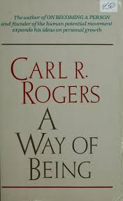
«Шлях буття» (A Way of Being, 1980) — остання прижиттєва велика праця Роджерса, його духовний і філософський заповіт. Саме в ній він описує «людину майбутнього» (the emerging person), підсумовує свої погляди на еволюцію освіти та вперше відкрито пише про трансцендентний, майже містичний вимір психотерапевтичного контакту, коли дві особистості зливаються в єдиному полі прийняття.
У 1986 році, у віці 84 років, він здійснив історичний візит до СРСР (Москва і Тбілісі), де провів демонстраційні сесії перед тисячами радянських людей. Це був культурний шок для обох сторін. Радянська психологія того часу була жорстко прив'язана до поведінкової моделі Павлова та марксистсько-ленінської ідеології: людина розглядалася як «продукт середовища», а будь-які розмови про «внутрішній світ» і «самоактуалізацію» вважалися буржуазними вигадками.
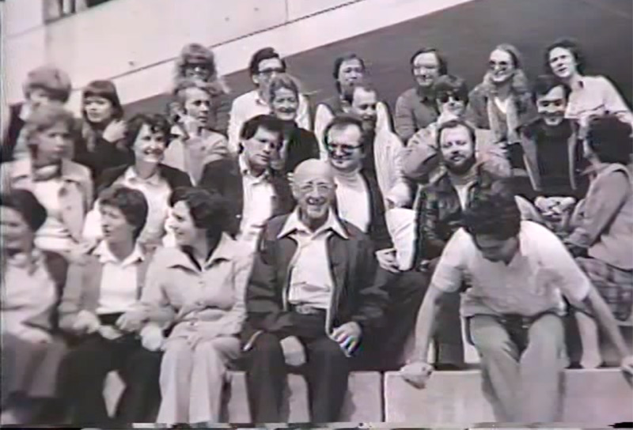
Коли Роджерс на сцені перед величезною аудиторією просто слухав людину, відображав її почуття і навіть плакав разом з нею від щирого співпереживання — радянські психологи спочатку сиділи в ступорі. Вони не могли зрозуміти: де тут маніпуляція? який прихований мотив? як він «лікує» без інструкцій? Але ефект був незаперечним.
Сьогоднішня клінічна психологія, нейробіологія та психіатрія бачать людську психіку набагато складніше і багатовимірніше, ніж це уявлялося в середині XX століття. Деякі з його постулатів зазнали обґрунтованої критики або були суттєво скориговані:
Погляд на природу людини та зло. Це була головна точка філософської критики Роджерса. Він палко вірив, що людина від природи є безумовно доброю (як жолудь, що прагне стати дубом), а зло та агресія — це лише результат травм і браку любові в дитинстві. Через це Роджерс багато сперечався зі своїм другом, видатним екзистенційним психологом Ролло Меєм.
Мей зазначав: «Карле, ти ігноруєш тіньову природу людини». Сучасна еволюційна психологія та генетика скоріш на боці Мея: у нас еволюційно закладені механізми як неймовірного альтруїзму, так і жорстокості, ксенофобії та агресії. Існують також вроджені психопатії (особливості будови мозку, при яких знижена здатність до емпатії), які неможливо пояснити лише «поганим вихованням» і неможливо виправити лише безумовним прийняттям.
У січні 1987 року багаторічна робота Карла Роджерса у гарячих точках світу отримала найвище визнання: американський конгресмен Джим Бейтс офіційно номінував 85-річного психолога на Нобелівську премію миру. Роджерс встиг дізнатися про цю номінацію, однак офіційне повідомлення про номінацію надійшло вже пізніше.
Через кілька днів він невдало впав у своєму будинку в Каліфорнії і зламав шийку стегна. Через кілька годин після успішної операції в нього відмовило серце, він впав у кому і залишався в ній аж до смерті кілька днів по тому - пішов з життя 4 лютого 1987 року. Відповідно до правил Нобелівського комітету, премія миру не присуджується посмертно, тому він її не отримав.
Замість похмурих похоронів його колеги та близькі орендували Музей сучасного мистецтва в Ла-Хойї на 500 місць. На сцені не було траурної атрибутики. Вони влаштували яскраве «Святкування життя» (Celebration of Life), де ділилися історіями про те, як ця людина навчила їх бути самими собою. Це була закрита прощальна церемонія для близьких, друзів і колег психолога.
Метод Роджерса став повітрям, яким дихає вся сучасна допомагаюча практика. Сучасна психотерапія (чи то когнітивно-поведенкова, гештальт, АСТ чи схема-терапія) розробила сотні нових інструментів. Але вони базуються на фундаменті, який заснував Роджерс: без поваги до суб'єктивного досвіду клієнта, без емпатії та створення безпечної атмосфери жодна, навіть найрозумніша техніка, не працюватиме повноцінно.
Його студент Маршалл Розенберг, який писав свою докторську дисертацію під керівництвом Роджерса у Вісконсині, перетворив філософію емпатії на алгоритм, доступний кожному, створивши Ненасильницьке спілкування (ННС).
Карл Роджерс змінив сам образ людини — відмовившись бачити в нас зламані механізми, він запропонував бачити живі системи, здатні до самостійного зростання. Він показав, що найпотужніша сила для змін — це коли тебе по-справжньому приймають.